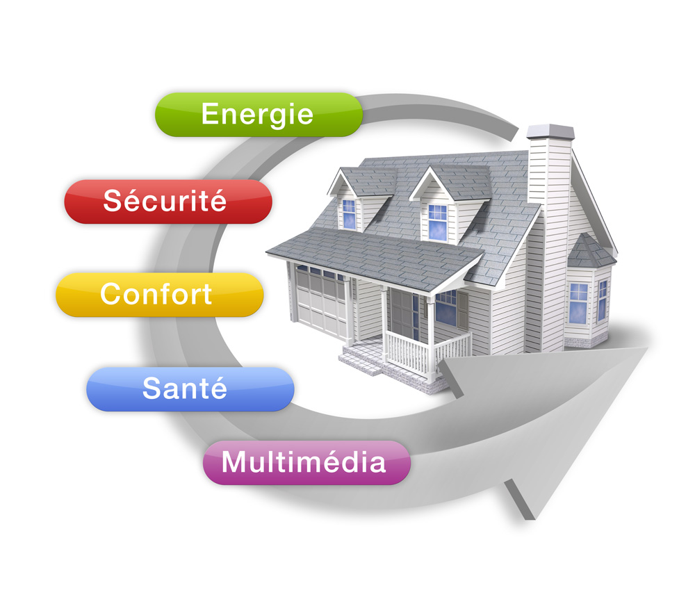
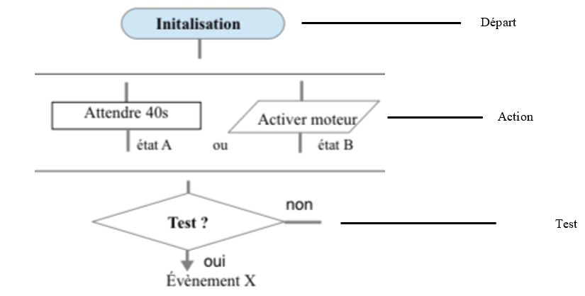

Accueil
En France, la tension dans les circuits des habitations est de 220 Volts. Avant de pouvoir alimenter les différents appareils de la maison, l'électricité passe par un tableau électrique. Ce tableau est équipé de différents éléments permettant de protéger les appareils mais également les personnes.
Lorsque l’on parle d’énergie électrique, on parle de sa tension qui est exprimée en volts, ou de son intensité exprimée en ampère. Une maison doit être fournie en énergie pour faire fonctionner les différents appareils. Les différents types d’énergies d’entrée sont l'électricité, l’eau, le gaz et l’énergie solaire.
Les différents appareils électroniques transformeront cette énergie en énergies :
- thermique
- lumineuse
- mécanique
- électrique

• DOMOTIQUE : l'ensemble des technologies automatiques destinées à équiper une habitation. Ces technologies peuvent être des systèmes de protection (alarmes), des utilisations de confort (volets électriques, portail à ouverture automatique...) ou servir à la communication (téléphonie, Internet...)
• Les débuts de la domotique remontent au XIXe siècle et donc à la révolution industrielle. Certaines des inventions que nous utilisons encore aujourd'hui remontent à cette époque. Le téléphone par exemple, est une invention de ce genre, même si celui – ci a énormément évolué au fil du temps.
• Une fois qu'une invention fonctionne sur le plan technique, il faut l'améliorer afin de rendre son utilisation la plus aisée et/ou la plus agréable possible. Plusieurs facteurs permettent d'améliorer un objet :
- le matériau de construction : de lui vont dépendre la solidité, la durabilité, la facilité d’entretien et l'esthétisme de l'appareil ;
- le design : un objet peut changer de forme pour répondre non pas à une nécessité mais à des modes ;
- l'ergonomie : l'ergonomie est à distinguer du design car elle s'attache moins à l'aspect esthétique qu'à l'aspect pratique (la taille, le poids) d'un objet.
► La propriété intellectuelle est un ensemble de droits accordés à un auteur ou un inventeur sur ses créations ou ses inventions.0
Elle est composée de :
• la propriété industrielle, qui protège et valorise les créations, les innovations et les inventions ;
• la propriété littéraire et artistique, qui s'applique aux œuvres de l'esprit.
► Le droit d’auteur couvre toutes les œuvres littéraires et artistiques, c’est l’ensemble des droits exclusifs dont dispose un auteur sur des œuvres de l’esprit.
Il se divise en deux parties :
• le droit moral, qui reconnaît à l'auteur la paternité de l’œuvre ;
• les droits patrimoniaux, qui permettent à l’auteur de bénéficier de l’exploitation économique de ses œuvres.
Sans autorisation de l’auteur, il est interdit de reproduire ou diffuser son œuvre.
► Un site web fiable doit fournir un certain nombre d’informations obligatoires appelées mentions légales, la mention légale doit contenir les informations concernant la personne morale :
• sa raison sociale ou dénomination ;
• l'adresse de son siège ;
• un numéro de téléphone ;
• le nom du directeur de la publication.
►Le copyright, indiqué par le symbole ©, désigne un ensemble de droits dont dispose une personne physique ou morale sur une œuvre de l’esprit. Sans autorisation de l’auteur, il est interdit de reproduire ou diffuser son œuvre.
• La modélisation 2D correspond à la représentation d’un objet technique sur ses 2 dimensions, c’est-à-dire sur sa longueur et sa hauteur. Cette représentation se dessine généralement sur un plan.
• La modélisation 3D qu’on appelle aussi dimension tridimensionnelle est la représentation d’un objet technique sur 3 dimensions : sa longueur, sa hauteur et sa profondeur que l’on peut définir selon 3 axes X, Y, Z.
• Les principaux modes de représentation d’une modélisation 3D sont :
o La vue en image filaire : toutes les lignes sont montrées.
o La vue image ombrée : les faces de l’objet technique sont colorées.
o La vue lignes cachées supprimées : les arêtes non visibles ne sont pas représentées.
o La vue lignes cachées pointillées : les arêtes non visibles sont représentées par des pointillés.
o La vue en coupe : la vue en coupe permet de voir les détails intérieurs d’une pièce, comme si la pièce avait été coupée. Les surfaces hachurées correspondent à la partie coupée.
• Un logiciel de modélisation propose plusieurs commandes :
o Afficher l’objet technique en plein écran, zoomer une zone sélectionner, faire pivoter l’objet technique, translater l’objet technique, afficher en perspective avec les faces ombrées, afficher la vue de face, de derrière, de gauche, de droite, de dessus ou de dessous de l’objet technique.
• Edrawing est un logiciel de visualisation de fichiers de conception numérique 3D. Il permet de visualiser une modélisation numérique en plusieurs modes d’affichage et propose plusieurs commandes de modélisation pour manipuler la pièce. Il liste aussi tous les composants qui constituent l’objet technique.
► Notre environnement est composé de plusieurs familles de constructions :
- Les bâtiments ;
- Les ouvrages d’arts.
- Les aménagements extérieurs.
► Le diagramme bête à cornes est un outil d’analyse qui permet d’identifier le besoin d’un objet technique sous forme d’un diagramme répondant à 3 questions :
- À qui rend service l’objet technique ?
- Sur quoi l’objet technique agit-il ?
- Dans quel but existe-t-il ?
► Les matériaux sont soit issus de la nature (exemples : bois, eau, ardoise…) soit obtenus après transformation (exemples : béton, verre, panneaux solaires…).
►Le béton est fabriqué à partir de granulats, de ciment et d'eau. Les matières premières d’origine minérale sont issus de carrières et l’eau des stations d’épuration.
Avant de fabriquer un objet, on anticipe sa construction au moyen de plans et de maquettes. Si ces étapes se faisaient auparavant à la main, elles sont aujourd’hui facilitées et accélérées par des logiciels de conception assistée par ordinateur (C.A.O.) ou par les logiciels de modélisation aussi appelés modeleurs numériques.
Modéliser une maquette numérique dans un logiciel de C.A.O nécessite les étapes suivantes :
• Définir un repère en deux dimensions (formé d’une origine O d’où partent deux axes perpendiculaires entre eux).
• Faire un plan sur ce repère 2D (le résultat est appelé esquisse).
• Coter l’esquisse avec les mesures qu’aura l’objet dans la réalité. L’unité est généralement le millimètre (mm).
• Extruder les formes 2D en formes 3D (ce qui ne fonctionne que ci le contour de l’esquisse est fermé).
• Parachever la maquette en utilisant toutes les ressources du logiciel ; cela permet de s’approcher au mieux de la forme voulue et de la personnaliser (couleurs, motifs, formes complexes, etc.).
Un organigramme permet de décrire plus facilement qu'avec un texte le fonctionnement d'un système automatisé. Pour construire un organigramme il faut respecter une norme de représentations.
Symboles normalisés pour construire un organigramme :
